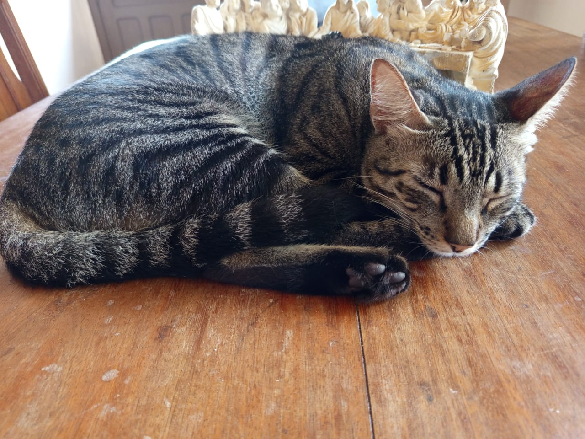

Mensagem Especial
Anna Luisa,
Desde o momento em que você entrou na minha vida, tudo ganhou mais cor, mais brilho e mais sentido. Você é como um raio de sol que aquece os meus dias, mesmo quando as nuvens insistem em aparecer.
Seu sorriso tem o poder de transformar tudo ao meu redor, e o som da sua risada é como música para minha alma. Cada instante ao seu lado é um presente, uma oportunidade de descobrir o quanto o amor pode ser puro, verdadeiro e mágico.
Eu admiro sua força, sua doçura e a forma como você ilumina o mundo das pessoas ao seu redor, especialmente o meu. Você é a definição do que é belo, não apenas por fora, mas principalmente por dentro.
Eu quero estar ao seu lado em todos os momentos, nos dias bons para celebrarmos juntos, e nos dias difíceis para te segurar firme e lembrar que tudo ficará bem. Quero ser o motivo de mais sorrisos seus, de mais momentos inesquecíveis e de uma felicidade que não tem fim.
Obrigado por ser quem você é, por confiar em mim e por me permitir te amar. Eu prometo cuidar de você e do nosso amor com todo o meu coração, porque você é, sem dúvida, a melhor coisa que já me aconteceu.
Com todo o meu amor,❤️Seu amor
Frases e Gatinhos
"O amor é a poesia dos sentidos." - Honoré de Balzac
A se ela soubesse que quando ela passsa...
Se um dia tiver que escolher entre o mundo e o amor lembre-se: se escolher o mundo ficará sem o amor, mas se escolher o amor com ele você conquistará o mundo. - Albert Ainstain
Você entende a relatividade quando vê que uma hora com a sua namorada parece um minuto, e um minuto sentado num formigueiro parece uma hora. - Albert Ainstain
A melhor coisa nela é que quando se olha nos olhos dela, e ela olha pra você, tudo parece fora do normal. Porque você se sente mais forte, e mais fraco ao mesmo tempo. Você fica excitado, e ao mesmo tempo, apavorado. Na verdade, você não sabe como se sente, mas sabe o tipo de homem que quer ser. É como se você atingisse o inatingível, sem esperar por isso.
Nem meu sentido aranha me avisou que eu iria cair nessa armadilha de amor que é você
Meu amor por você é como um mapa do Minecraft: interminável.
Nossas vidas estão todas entrelaçadas em uma bela teia de vida e destino
Não existe esse tal de normal, o amor é a única coisa que faz a luta valer a pena, e a única coisa que nos fará superar. Amor é tudo que devemos ter nesse mundo, sem ele... nada importa de verdade
Nesse e em todos os universos eu escolhi vc em todos
Eu te amo em todos os universos.
Então é isso o amor! Isso que faz a vida parecer divina.
Meu sonho nunca será completo sem você nele.
